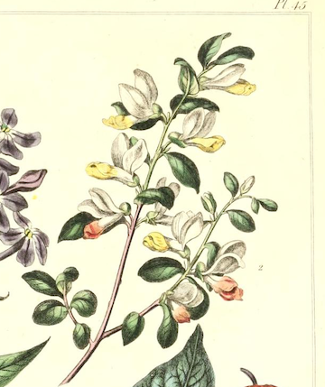

-
1. Calla Lily
Magnificent Beauty
"The calla lilies are in bloom again. Such a strange flower--suitable to any occasion. I carried them on my wedding day, and now I place them here in memory of something that has died" -Edna Ferber & George S Kaufman, The Stage Door (1936)

-
2. Lily of the Valley
Love's Good Fortune
"I have considered the lilies/They never toil, they only bloom/They never feel chilly or tired or silly/And they don't need much room" -Connie Converse, "I Have Considered the Lilies"
This bloom's name carries two meanings: on the one hand, Lily of the Valley invokes its habitual place of growth, that is, on hillsides and in valleys; on the other, the monks in Northern Europe who gave this flower its name intentionally invoked verse two in the Song of Songs, "I am the rose of Sharon and the lily of the valley."
Due to its primary season coming directly after the violet and before the rose (i.e. in the month of May), suitors in Nothern Europe began to believe gifting this bloom to the person of their affections would give luck to their efforts and eventual union. At one time, this flower was dedicated to the Germanic goddess of spring, Osara, and many a bonfinre was lit with flowers of the lily as offerings in her name.

-

3. Milkweed
Hope in Misery
Quote about first flower
-
4. Snow Drop
Hope
"Snowdrops: Theirs is a fragile but hardy celebration in the very teeth of winter" -Louise Wilder

-
5. Sweet William
Grant Me One Smile
Quote about first flower